Cobb's closeup in the EGA version contains some unused graphics. There's an image of the word "Advertisement" which appears in the top left (as opposed to in the final game, where it's rendered as normal text), and a frame of his button with the text darker and the sparkle bigger. There's also an unused script that rapidly alternates between the two button frames, as if it's blinking on and off.
Here's what it looks like with these things reimplemented:
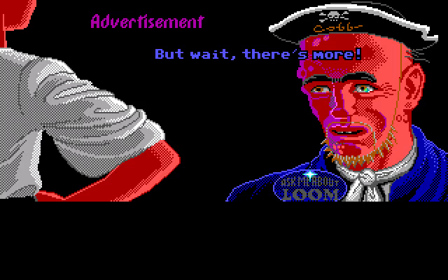
Compared to the final game:
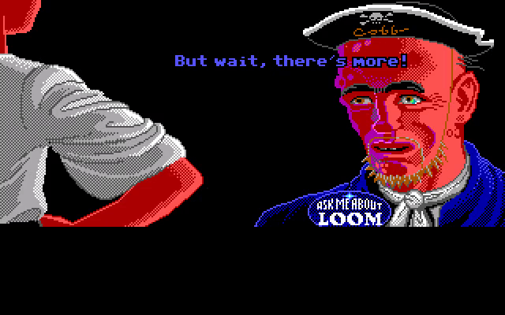
It's not very easy on the eyes, which is probably why this went unused. It's also likely that the word "Advertisement" was changed to a normal piece of text in order to make translation easier.
In the EGA version, Mancomb is clearly sitting on a chair, but in the VGA versions, his chair is missing. The artist who did the VGA conversion for this scene seemingly forgot to draw it in.
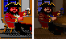
All three Pirate Leaders are supposed to be sitting with their arms resting on the table, as can clearly be seen in their costume.
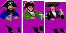
However, in both floppy versions, they were accidentally layered behind the table. This makes it look as if Blue and Green in particular are hiding their mugs under the table.
This was eventually fixed in the CD version.
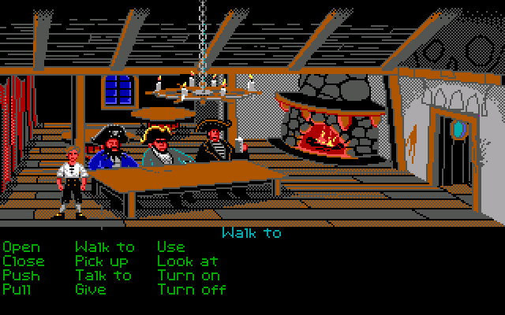
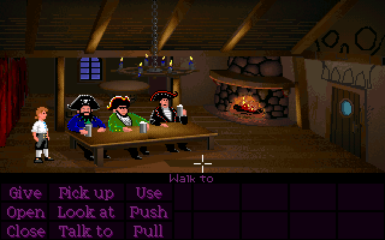
Interestingly, at around 4:06:42 in the Video Game History Foundation's 30th anniversary Monkey Island stream, we see footage of the EGA version with the Pirate Leaders layered correctly. This commercial was created when the game was near the end of development, but not quite in its final state, as evidenced by the early title screen, which means the Pirate Leaders probably got messed up right at the last minute.
As a side-note, the description of those random wandering pirates as "the most sarcastic seamen ever to hoist the jolly roger" is incredibly funny to me.
One of the pirates sitting at Estevan's table has a bandana around his head. In the EGA version, the bandana has two loose ends at the back, but they were removed in the VGA versions for unknown reasons. However, the zplane (the bitmask that controls which pixels are transparent) was left unchanged, in that it still follows the outline of the EGA bandana.
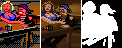
This means whenever Guybrush or the Cook walks behind this guy's head in the VGA versions, a tiny cutout shape of the bandana ends can be seen.
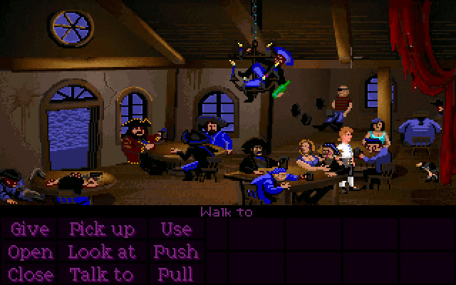
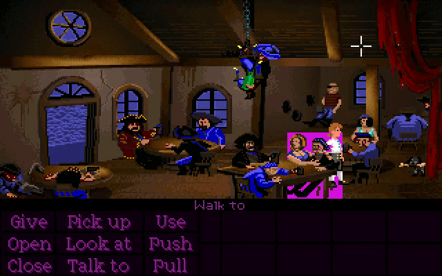
When Guybrush first tells the Pirate Leaders "I want to be a pirate!", in the brief pause before Blue responds with "So what?", Green does a special "shrug" animation where he splays his hand out. It's extremely easy to miss.
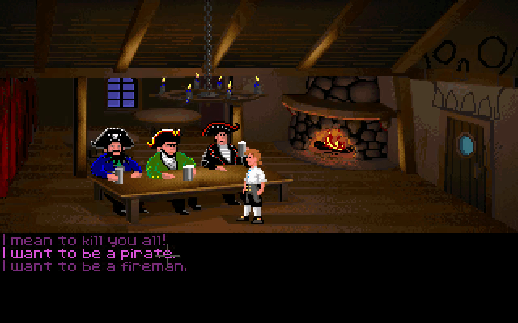
He also does the same animation repeatedly while Blue says "To be a pirate ye must also be a foul-smelling, grog-swilling pig."
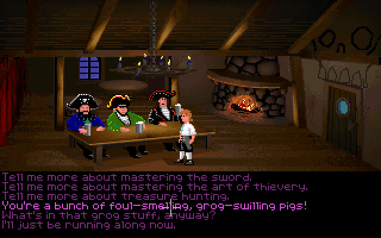